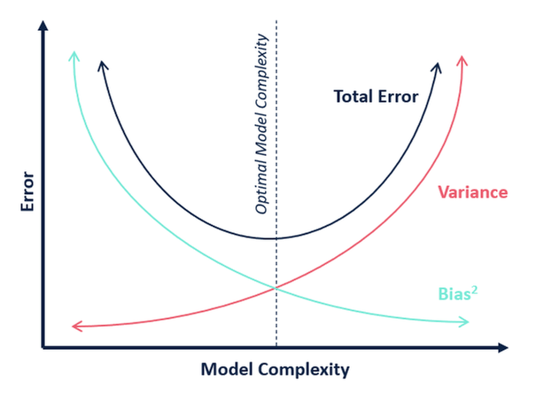
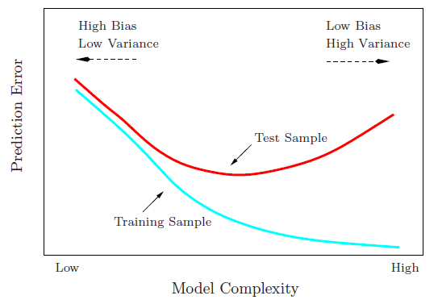
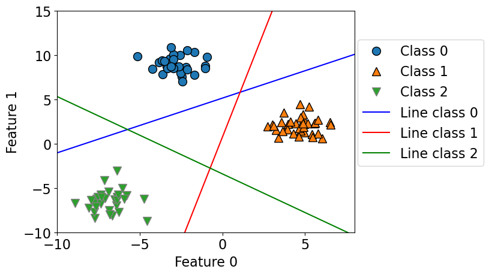

Supervised Learning
- Machine Learning: A field of study that gives computers the ability to learn without being explicitly programmed.
- auto detect patterns in data and make predictions
- Popular def of supervised learning: input: data + labels, output: model
- Training a model from input data and its corresponding targets to predict targets for new examples.
- Fundamental goal of machine learning: generalize beyond the examples in the training set.
Supervised vs. Unsupervised Learning
| Supervised Learning | Unsupervised Learning | |
|---|---|---|
| Description | The training data includes the desired solutions, called labels. | The training data is unlabeled. |
| Subtypes/Goals | - Predict based on input data and its corresponding targets - Classification: Predict a class label e.g. will someone pass or fail final based on previous scores - Regression: Predict a continuous number e.g. what score will someone get on final based on previous score |
- Clustering: Group similar instances - Anomaly detection: Detect abnormal instances - Visualization and dimensionality reduction: Simplify data - Association rule learning: Discover relations between attributes |
| Other Examples | Decision tree, naive bayes, kNN, random forest, support vector machine, neural network | k-means, hierarchical cluster analysis, expectation maximization, t-SNE, apriori, FP-growth |
Common terms
- Features/ X[n x d]: The input variables used to make predictions. (d = # of features)
- Target/ y [n x 1]: The output variable we are trying to predict.
- Example: A particular instance of data, usually represented as a vector of features. (n = # of training examples)
- Training: Fitting the model to examples.
- Label: The target value for a particular example. (y)
Parameters vs. Hyperparameters
| Parameters | Hyperparameters | |
|---|---|---|
| Description | The coefficients learned by the model during training. | Settings used to control the training process. |
| Learning/Setting Process | Are learned automatically during training. | Are set before training. |
| Purpose or Role | Rule values that are learned from the training data (examples/features). | Controls how complex the model is. Validate using validation score (can overfit if too complex). |
| Examples | e.g. coefficients in linear regression, weights in neural networks | e.g. learning rate, number of iterations, number of hidden layers, depth of decision tree, k in kNN and k-means |
Errors
- Generally there are 2 kinds of error:
- Training error (\(E_{train}\)): Error on the training data.
- Distribution error/ test error/ generalization error (\(E_{D}\)): Error on new data.
- \(E\_{approx} = E_{D} - E_{train}\)
Training, Validation, and Test Sets
- Training set: The data used to train the model. Used a lot to set parameters.
- Validation set: The data used to evaluate the model during training. Used a few times to set hyperparameters.
- Test set: The data used to evaluate the model after training. Used once to estimate \(E_{D}\).
- Deployment: The model is used in the real world.
from sklearn.model_selection import train_test_split
# Used directly on X and y
X_train, X_test, y_train, y_test = train_test_split(
X, y, test_size=0.2, random_state=123
) # 80%-20% train test split on X and y
# Used on a dataframe
train_df, test_df = train_test_split(
df, test_size=0.2, random_state=123
) # 80%-20% train test split on dfCross-Validation
- A method of estimating \(E_{D}\) using the training set.
- Divide the training set into \(k\) folds.
- For each fold, train on the other \(k-1\) folds and evaluate on the current fold.
- Benefits:
- More accurate estimate of \(E_{D}\). Sometimes just unlucky with train/test split, this helps.
- More efficient use of data.
from sklearn.model_selection import cross_val_score, cross_validate
# cross_val_score not as comprehensive as cross_validate
# cross_val_score only returns the scores
cv_scores = cross_val_score(model, X_train, y_train, cv=10)
# using cross_validate
scores = cross_validate(model, X_train, y_train, cv=10, return_train_score=True)
# returns a dictionary with keys: ['fit_time', 'score_time', 'test_score', 'train_score']
pd.DataFrame(scores)cross-validation does not return a model. It is not a way to build a model that can be applied to new data. The purpose of cross-validation is to evaluate how well the model will generalize to unseen data.
Fundamental Trade-Off
- AKA the bias/ variance trade-off in supervised learning.
- Bias: Tendency to consistently learn the same wrong thing (high bias = underfitting).
- Variance: Tenency to learn random things irrespective of the real signal (high variance = overfitting).
- As you increase model complexity, \(E_{train}\) goes down but \(E_{approx} = E_{D} - E_{train}\) goes up.  
Golden Rule : THE TEST DATA CANNOT INFLUENCE THE TRAINING PHASE IN ANY WAY.
Types of Supervised Learning
Baseline
A simple, fast, and easily explainable model that is used as a starting point for a more sophisticated model.
- Most common baseline for classification is majority class classifier.
- Most common baseline for regression is mean predictor.
- in sklearn,
DummyClassifierandDummyRegressorare used to create baselines.
Decision Trees
- basic idea: predict using a series of if-then-else questions
- depth of tree: number of questions asked (hyperparameter)
- decision boundary: region of feature space where all instances are assigned to the same class
- decision stump: a decision tree with only one split (depth = 1)
| Advantages | Disadvantages |
|---|---|
| - Easy to interpret and explain. | - Biased with imbalanced datasets. |
| - Can handle both numerical and categorical data. | - Greedy splitting algorithm might not find the globally optimal tree. |
| - Can handle multi-output problems. | - Hard to learn the true relationship between features and target (can only ask yes/no questions). |
from sklearn.tree import DecisionTreeClassifier
clf = DecisionTreeClassifier(max_depth=3) # create model object
clf.fit(X_train, y_train) # fit model on training data
clf.score(X_test, y_test) # score model on test data or use clf.predict(X_test)- can also use
DecisionTreeRegressorfor regression problems (continuous target)- difference:
- score: returns R^2 score (1 is best, 0 is worst)
- leaf nodes: returns average of target values in leaf node
DecisionTreeClassifieruses entropy andDecisionTreeRegressoruses variance
- difference:
kNN
- kNN is a non-parametric model (no parameters to learn and stores all training data)
- kNN is a lazy learner (no training, just prediction)
- slow at prediction time
- kNN is a supervised model (needs labels)
- hyperparameters:
- k: number of neighbors to consider, smaller k means more complex decision boundary
from sklearn.neighbors import KNeighborsClassifier
knn = KNeighborsClassifier(n_neighbors=10)
knn.fit(X_train, y_train)
knn.score(X_test, y_test)| Pros of k-NNs for Supervised Learning | Cons of k-NNs for Supervised Learning |
|---|---|
| Easy to understand, interpret. | Can be potentially VERY slow during prediction time with a large training set. |
| Simple hyperparameter (n_neighbors) controlling the tradeoff | Often not great test accuracy compared to modern approaches. |
| Can learn very complex functions given enough data. | Doesn’t work well on datasets with many features or sparse datasets. |
| Lazy learning: Takes no time to fit | Falls apart when # dimensions increase (curse of dimensionality) |
SVM RBF
- SVM is a parametric model (needs to learn parameters)
- remembers the support vectors
- uses a kernel function to transform the data (RBF, Radial Basis Func, is the default)
- Decision boundary only depends on support vectors (smooth)
- hyperparameters:
- C: regularization parameter, larger C means more complex
- gamma: kernel coefficient, larger gamma means more complex
from sklearn.svm import SVC
svm = SVC(C=10, gamma=0.1)
svm.fit(X_train, y_train)
svm.score(X_test, y_test)Preprocessing
Scaling values using StandardScaler
- in KNN, we need to scale the data (in classification, we don’t need to scale the data)
from sklearn.preprocessing import StandardScaler
scaler = StandardScaler() # create feature trasformer object
scaler.fit(X_train) # fitting the transformer on the train split
X_train_scaled = scaler.transform(X_train) # transforming the train split
X_test_scaled = scaler.transform(X_test) # transforming the test splitAddress missing values using SimpleImputer
- replace all missing values with the mean/ median of the column
from sklearn.impute import SimpleImputer
imputer = SimpleImputer(strategy='median') # create imputer object
imputer.fit(X_train_num_only) # fitting the imputer on the train split
X_train_num_only_imputed = imputer.transform(X_train_num_only) # transforming the train split
X_test_num_only_imputed = imputer.transform(X_test_num_only) # transforming the test splitAddress cataegorical values using OneHotEncoder
- turn categorical values into one-hot encoding
- to get the column names, use
get_feature_names():encoder.get_feature_names().tolist()
from sklearn.preprocessing import OneHotEncoder
encoder = OneHotEncoder(handle_unknown='ignore') # create encoder object
encoder.fit(X_train_cat_only) # fitting the encoder on the train split
X_train_cat_only_encoded = encoder.transform(X_train_cat_only) # transforming the train split
X_test_cat_only_encoded = encoder.transform(X_test_cat_only) # transforming the test split- other arguments for OneHotEncoder:
handle_unknown='ignore'will ignore unknown categories- if you don’t set this, you will get an error if there are unknown categories in the test set
sparse_output=Falsewill return a dense matrix instead of a sparse matrix- default is
sparse_output=True(returns a sparse matrix - only stores non-zero values)
- default is
drop="if_binary"will drop one of the columns if there are only two categories- default is
drop=None(no columns are dropped) drop="first"will drop the first columndrop=[0, 2]will drop the first and third columns
- default is
Discretizing
- e.g turning age into age groups (e.g. child, adult, senior or 0-20, 20-40, 40-60, 60+)
Address catagorical values using OrdinalEncoder
- turn categorical values into ordinal encoding (e.g. low, medium, high)
dtype=intwill make the output an integer
from sklearn.preprocessing import OrdinalEncoder
ordered_categories = ['low', 'medium', 'high']
encoder = OrdinalEncoder(categories=[ordered_categories], dtype=int) # create encoder object
encoder.fit(X_train_cat_only) # fitting the encoder on the train split
X_train_cat_only_encoded = encoder.transform(X_train_cat_only) # transforming the train split
X_test_cat_only_encoded = encoder.transform(X_test_cat_only) # transforming the test splitAddress Bag of Words using CountVectorizer
- turn a string of words into a vector of word counts (e.g., “white couch” -> [“white”: 1, “couch”: 1])
from sklearn.feature_extraction.text import CountVectorizer
vectorizer = CountVectorizer(stop_words='english') # create vectorizer object
X_train_text_only_vectorized = vectorizer.fit_transform(X_train_text_only) # fitting and transforming the train split
X_test_text_only_vectorized = vectorizer.transform(X_test_text_only) # transforming the test split- Parameters:
stop_words='english'will remove common English words (e.g., “the”, “a”, “an”, “and”, “or”, “but”, “not”)- default is
stop_words=None(no words are removed)
- default is
max_features=100will only keep the 100 most common words- default is
max_features=None(all words are kept)
- default is
- handles unknown words by ignoring them
sklearn summary
| Estimators | Transformers | |
|---|---|---|
| Purpose | used to fit and predict | used to change input data |
| Usage | Need to fit X_train, y_train | Need to fit X_train (no y_train) |
| Can score on X_test, y_test | nothing to score | |
| Examples | - DecisionTreeClassifier | - StandardScaler |
| - KNeighborsClassifier | - SimpleImputer | |
| - LogisticRegression | - OneHotEncoder | |
| - SVC | - OrdinalEncoder |
- Don’t fit with transformer then cross validate with estimator
- This is data leakage (train is influenced by validation)
- solution: Use Sklearn Pipeline!
Pipeline
- use sklearn.pipeline.Pipeline
- make a pipeline:
from sklearn.pipeline import make_pipeline
pipe_knn = make_pipeline(
SimpleImputer(strategy='median'),
StandardScaler(),
KNeighborsClassifier(n_neighbors=10)
)Column Transformer
- This is a transformer that can handle multiple columns
from sklearn.compose import make_column_transformer
preprocessor = make_column_transformer(
(make_pipeline(SimpleImputer(), StandardScaler()), numeric_feats), # scaling on numeric features
("passthrough", passthrough_feats), # no transformations on the binary features
(OneHotEncoder(), categorical_feats), # OHE on categorical features
# normally OHE is put at the end since it makes new cols
("drop", drop_feats), # drop the drop features
)- get names of transformers:
preprocessor.named_transformers_ - get new column names:
preprocessor.named_transformers_["onehotencoder"].get_feature_names()
Preprocessing
Scaling values using StandardScaler
- in KNN, we need to scale the data (in classification, we don’t need to scale the data)
from sklearn.preprocessing import StandardScaler
scaler = StandardScaler() # create feature trasformer object
scaler.fit(X_train) # fitting the transformer on the train split
X_train_scaled = scaler.transform(X_train) # transforming the train split
X_test_scaled = scaler.transform(X_test) # transforming the test splitAddress missing values using SimpleImputer
- replace all missing values with the mean/ median of the column
from sklearn.impute import SimpleImputer
imputer = SimpleImputer(strategy='median') # create imputer object
imputer.fit(X_train_num_only) # fitting the imputer on the train split
X_train_num_only_imputed = imputer.transform(X_train_num_only) # transforming the train split
X_test_num_only_imputed = imputer.transform(X_test_num_only) # transforming the test splitAddress cataegorical values using OneHotEncoder
- turn categorical values into one-hot encoding
- to get the column names, use
get_feature_names():encoder.get_feature_names().tolist()
from sklearn.preprocessing import OneHotEncoder
encoder = OneHotEncoder(handle_unknown='ignore') # create encoder object
encoder.fit(X_train_cat_only) # fitting the encoder on the train split
X_train_cat_only_encoded = encoder.transform(X_train_cat_only) # transforming the train split
X_test_cat_only_encoded = encoder.transform(X_test_cat_only) # transforming the test split- other arguments for OneHotEncoder:
handle_unknown='ignore'will ignore unknown categories- if you don’t set this, you will get an error if there are unknown categories in the test set
sparse_output=Falsewill return a dense matrix instead of a sparse matrix- default is
sparse_output=True(returns a sparse matrix - only stores non-zero values)
- default is
drop="if_binary"will drop one of the columns if there are only two categories- default is
drop=None(no columns are dropped) drop="first"will drop the first columndrop=[0, 2]will drop the first and third columns
- default is
Discretizing
- e.g turning age into age groups (e.g. child, adult, senior or 0-20, 20-40, 40-60, 60+)
Address catagorical values using OrdinalEncoder
- turn categorical values into ordinal encoding (e.g. low, medium, high)
dtype=intwill make the output an integer
from sklearn.preprocessing import OrdinalEncoder
ordered_categories = ['low', 'medium', 'high']
encoder = OrdinalEncoder(categories=[ordered_categories], dtype=int) # create encoder object
encoder.fit(X_train_cat_only) # fitting the encoder on the train split
X_train_cat_only_encoded = encoder.transform(X_train_cat_only) # transforming the train split
X_test_cat_only_encoded = encoder.transform(X_test_cat_only) # transforming the test splitAddress Bag of Words using CountVectorizer
- turn a string of words into a vector of word counts (e.g., “white couch” -> [“white”: 1, “couch”: 1])
from sklearn.feature_extraction.text import CountVectorizer
vectorizer = CountVectorizer(stop_words='english') # create vectorizer object
X_train_text_only_vectorized = vectorizer.fit_transform(X_train_text_only) # fitting and transforming the train split
X_test_text_only_vectorized = vectorizer.transform(X_test_text_only) # transforming the test split- Parameters:
stop_words='english'will remove common English words (e.g., “the”, “a”, “an”, “and”, “or”, “but”, “not”)- default is
stop_words=None(no words are removed)
- default is
max_features=100will only keep the 100 most common words- default is
max_features=None(all words are kept)
- default is
binary=Truewill only keep 0 or 1 for each word (instead of the count)- default is
binary=False(the count is kept)
- default is
- handles unknown words by ignoring them
Breaking Golden Rule
- If we know fixed categories (i.e., provinces in Canada), we can break the golden rule and pass the list of known/possible categories
sklearn summary
| Estimators | Transformers | |
|---|---|---|
| Purpose | used to fit and predict | used to change input data |
| Usage | Need to fit X_train, y_train | Need to fit X_train (no y_train) |
| Can score on X_test, y_test | nothing to score | |
| Examples | - DecisionTreeClassifier | - StandardScaler |
| - KNeighborsClassifier | - SimpleImputer | |
| - LogisticRegression | - OneHotEncoder | |
| - SVC | - OrdinalEncoder |
- Don’t fit with transformer then cross validate with estimator
- This is data leakage (train is influenced by validation)
- solution: Use Sklearn Pipeline!
Pipeline
- use sklearn.pipeline.Pipeline
- make a pipeline:
from sklearn.pipeline import make_pipeline
pipe_knn = make_pipeline(
SimpleImputer(strategy='median'),
StandardScaler(),
KNeighborsClassifier(n_neighbors=10)
)
scores = cross_validate(pipe_knn, X_train, y_train, return_train_score=True)
pipe_knn.fit(X_train, y_train)Column Transformer
- This is a transformer that can handle multiple columns
from sklearn.compose import make_column_transformer
preprocessor = make_column_transformer(
(make_pipeline(SimpleImputer(), StandardScaler()), numeric_feats), # scaling on numeric features
("passthrough", passthrough_feats), # no transformations on the binary features
(OneHotEncoder(), categorical_feats), # OHE on categorical features
# normally OHE is put at the end since it makes new cols
("drop", drop_feats), # drop the drop features
)- get names of transformers:
preprocessor.named_transformers_ - get new column names:
preprocessor.named_transformers_["onehotencoder"].get_feature_names()
Hyperparamter Optimization
Methods
- Manual
- Takes a lot of time
- intuition is not always correct
- some hyperparameters work together
- Automated
- Grid search
Grid Search
- Exhaustive search over specified parameter values for an estimator
- runs \(n^m\) CV for m hyperparameters and n values for each parameter
- After finding best parameter, it trains/fits the model on the whole training set
Parameters:
GridSearchCV(estimator, param_grid, scoring=None, cv=None, n_jobs=None))- estimator: estimator object
- param_grid: dictionary with parameters names as keys and lists of parameter settings to try as values
- uses
__syntax to specify parameters of the estimator - e.g:
columntransformer__countvectorizer__max_features: max features of count vectorizer in column transformersvc__gamma: gamma of SVC
- uses
- scoring: scoring method
- cv: cross-validation method
- n_jobs: number of jobs to run in parallel (-1 means use all processors)
Code
from sklearn.model_selection import GridSearchCV
pipe_svm = make_pipeline(preprocessor, SVC())
param_grid = {
"columntransformer__countvectorizer__max_features": [100, 200, 400, 800, 1000, 2000],
"svc__gamma": [0.001, 0.01, 0.1, 1.0, 10, 100],
"svc__C": [0.001, 0.01, 0.1, 1.0, 10, 100],
}
# Create a grid search object
gs = GridSearchCV(pipe_svm, param_grid=param_grid, cv=5, n_jobs=-1)
gs.fit(X_train, y_train)
gs.best_score_ # returns the best score
gs.best_params_ # returns the best parameters
# Returns a dataframe of all the results
pd.DataFrame(random_search.cv_results_)[
[
"mean_test_score",
"param_columntransformer__countvectorizer__max_features",
"param_svc__gamma",
"param_svc__C",
"mean_fit_time",
"rank_test_score",
]
].set_index("rank_test_score").sort_index().T
# Can score on the test set
gs.score(X_test, y_test)Random Search
- Picks random values for the hyperparameters according to a distribution
- only runs n_iter CV
Parameters
RandomizedSearchCV(estimator, param_distributions, n_iter=10, scoring=None, cv=None, n_jobs=None))- estimator: estimator object
- param_distributions: dictionary with parameters names as keys and distributions or lists of parameters to try
- can also pass param_grid from grid search (but does not exhaustively search)
- n_iter: number of parameter settings that are sampled
- scoring: scoring method
- cv: cross-validation method
- n_jobs: number of jobs to run in parallel (-1 means use all processors)
Code
from sklearn.model_selection import RandomizedSearchCV
param_dist = {
"columntransformer__countvectorizer__max_features": randint(100, 2000),
"svc__C": uniform(0.1, 1e4), # loguniform(1e-3, 1e3),
"svc__gamma": loguniform(1e-5, 1e3),
}
rs = RandomizedSearchCV(
pipe_svm,
param_distributions=param_dist,
n_iter=10,
cv=5,
n_jobs=-1,
random_state=42,
)Random vs Grid Search
- Advantages of Random Search
- Faster
- Adding hyperparameters that do not influence the performance does not decrease the performance
- Works better when some hyperparameters are more important than others
- recommended more than grid search
Naive Bayes
Bayes’ Theorem
\[ P(A|B) = \frac{P(B|A)P(A)}{P(B)} \]
Basic idea
- We have a set of classes (e.g. spam or not spam)
- We have a set of features (e.g. words in an email)
We want to find the probability of a class given a set of features.
\[ P(C|F_1, F_2, ..., F_n) = \frac{P(F_1, F_2, ..., F_n|C)P(C)}{P(F_1, F_2, ..., F_n)} \]
Naive Bayes
- Bag of words model (order of words doesn’t matter)
- Assume that all features are conditionally independent of each other (naive assumption)
- This allows us to simplify the equation to:
\[ P(C|F*1, F_2, ..., F_n) \approx \frac{P(C)* \prod P(F_i|C)}{P(F_1, F_2, ..., F_n)} \]
Laplace Smoothing
- If a word is not in the training set, then the probability of that word given a class is 0
- This will cause the entire probability to be 0
- We can fix this by adding 1 to the numerator and adding the number of words to the denominator
\[ P(F_i|C) = \frac{count(F_i, C) + 1}{count(C) + |V|} \]
where V is the number of possible word values
Sklearn Implementation
from sklearn.naive_bayes import MultinomialNB, BernoulliNB
pipe_nb = make_pipeline(CountVectorizer(), MultinomialNB())
results_dict["Naive Bayes"] = mean_std_cross_val_scores(
pipe_nb, X_train, y_train, return_train_score=True
)- MultinomialNB generally works better than BernoulliNB, especially for large text datasets
- BernoulliNB assumes that the features are binary (e.g. 0 or 1)
- MultinomialNB assumes that the features are counts (e.g. 0, 1, 2, 3, …)
- Parameters:
alphais the Laplace smoothing parameter (actually hyperparameter), default isalpha=1.0- High alpha means more smoothing => underfitting
- Low alpha means less smoothing => overfitting
Continuous Features
- We can use a Gaussian Naive Bayes model for continuous features
- This assumes that the features are normally distributed
- If not, can use
sklearn.preprocessing.PowerTransformerto transform the data to be more normal
- If not, can use
from sklearn.naive_bayes import GaussianNB
model = GaussianNB()
model.fit(X_train, y_train)
# view
model.theta_ # mean of each feature per class
model.sigma_ # variance of each feature per class
model.var_ # overall variance of each feature
model.class_prior_ # prior probability of each class
model.predict_proba(X_test) # probability of each classLinear Models
- make predictions using a linear function of the input features
- decision boundary is a hyperplane
- if 2d, decision boundary is a line
- uncertain near the decision boundary
- Limitations:
- can only learn linear decision boundaries
- can only learn linear functions of the input features
Linear Regression
- Main idea: find the line that minimizes the sum of squared errors
- Components:
- input features (d features)
- coefficients (d coefficients)
- intercept/ bias (1 intercept)
- Normally has
d+1parameters (one for each feature plus the intercept) - Makes
d-1hyperplanes (separating lines) inddimensions - More complex normally means the coefficients are larger
- Raw output score can be used to calculate probability score for a given prediction
- SCALING IS IMPORTANT
- If features are on different scales, the coefficients will be on different scales
Ridge
\[ \min\_{w} ||Xw - y||\_2^2 + \alpha ||w||\_2^2 \]
- L2 regularization
- Hyperparameters:
alpha: regularization strength- larger values => more regularization => simpler model => underfitting
- more regularization => smaller coefficients => less sensitive to changes in input features (outliers)
from sklearn.linear_model import Ridge
pipe = make_pipeline(StandardScaler(), Ridge())
scores = cross_validate(pipe, X_train, y_train, return_train_score=True)
coeffs = pipe_ridge.named_steps["ridge"].coef_ # view coefficients
# coeffs.shape = (n_features,), one coefficient for each feature
intercept = pipe_ridge.named_steps["ridge"].intercept_ # view intercept/ biasLaso
\[ \min\_{w} ||Xw - y||\_2^2 + \alpha ||w||\_1 \]
- L1 regularization
- Hyperparameters:
alpha: regularization strength- larger values => more regularization => simpler model => underfitting
Logistic Regression
- Main idea: use linear regression to predict the probability of an event
- Applies a “threshold” to the raw output score to make a prediction -> decides whether to predict 0/1 or -1/1
- Components:
- input features (d features)
- coefficients (d coefficients)
- intercept/ bias (1 intercept)
- threshold r (1 threshold)
- Hyperparameters:
C: inverse of regularization strength- larger values => less regularization => more complex model => overfitting
from sklearn.linear_model import LogisticRegression
lr = LogisticRegression()
scores = cross_validate(lr, X_train, y_train, return_train_score=True)
# access coefficients and intercept
lr.coef_ # shape = (n_classes, n_features)
lr.intercept_ # shape = (n_classes,)
lr.classes_ # array of classespredict_probareturns the probability of each class- for binary classification, returns both classes (although one is redundant)
- based on the order of
lr.classes_ - sum of probabilities for each sample is 1
predictreturns the class with the highest probability
sigmoid function
\[ \sigma(z) = \frac{1}{1 + e^{-z}} \]
- turns -inf to 0 and inf to 1

Linear SVM
- Main idea: find the line that maximizes the margin between the decision boundary and the closest points
from sklearn.svm import SVC
linear_svc = SVC(kernel="linear")
scores = cross_validate(linear_svc, X_train, y_train, return_train_score=True)Multi-class, meta-strategies
- Can do multiclass naturally: KNN, decision trees
- 2 hacky ways to use binary classifiers for multi-class classification:
One-vs-Rest (OVR)
- Train a binary classifier for each class
- creates binary linear classifiers separating each class from the rest (i.e blue vs rest, red vs rest, green vs rest)
- Classify by choosing the class with the highest probability

e.g. a point on (0, -5) would get:
lr.coef_would give 3x2 array (3 classes, 2 features)lr.intercept_would give 3x1 array (3 classes, 1 intercept)- Get score with
test_points[4]@lr.coef_.T + lr.intercept_return array size 3, choose the class with the highest score
One-vs-One (OVO)
- Train a binary classifier for each pair of classes
- creates binary linear classifiers separating each class from each other class (i.e blue vs red, blue vs green, red vs green)
- trains \(\frac{n(n-1)}{2}\) classifiers
- count the number of times each class wins
- Classify by choosing the class with the most wins
Using this in Python
from sklearn.multiclass import OneVsOneClassifier, OneVsRestClassifier
model = OneVsOneClassifier(LogisticRegression())
%timeit model.fit(X_train_multi, y_train_multi);
model = OneVsRestClassifier(LogisticRegression())
%timeit model.fit(X_train_multi, y_train_multi);